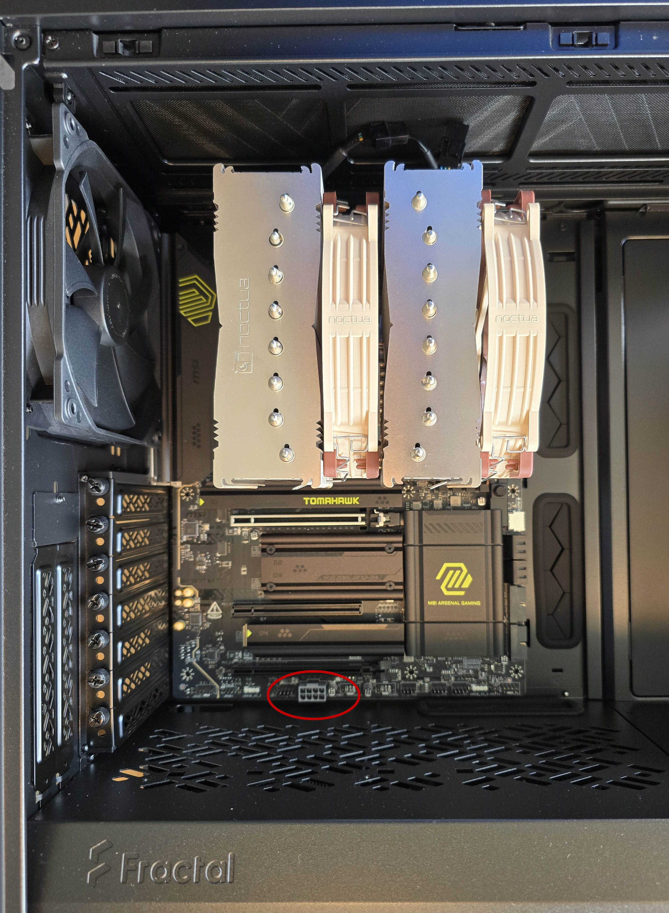
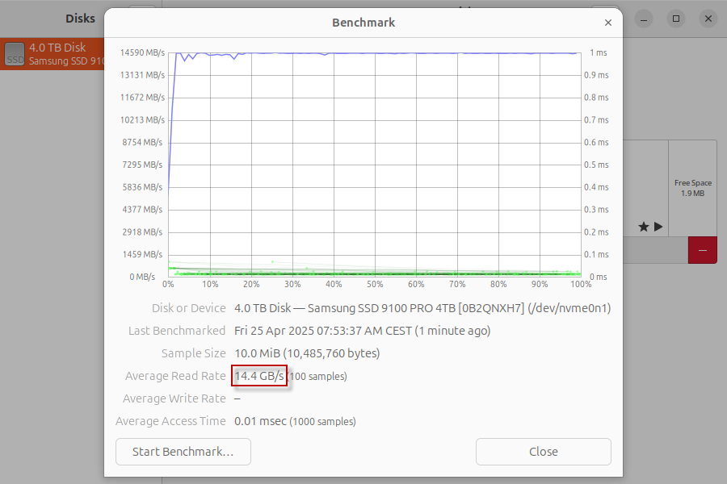

My new PC build 2025
I had built my current PC back in June 2011, almost 14 (!) years ago. Based
on an Intel Core i7 2600K 3.4 GHz CPU on an Asus P8Z68-V Pro motherboard, with
32 GB of 668.8 MHz DDR3 memory and no seperate GPU (Intel HD Graphics 3000 CPU internal graphics
only), it has held steady and served me well over all these years.
But then so many new technologies have evolved over the years, like PCIe 5.0, DDR5, USB4 Type-C,
Thunderbolt 4, or TPM 2.0, that my old machine seems to have fallen out of time. Also, since I have recently
bumped my internet access to 25 Gbit/s (see
https://objectsandmore.github.io/25gigRouterBuild.html/)
and started to upgrade my 1 Gbit/s LAN infrastructure to 2.5/10/25 Gbit/s, this machine cannot even make use of the
full network bandwidth. After all, it only has a PCIe Gen2 bus, and there is simply no way
I would get a modern 10/25 Gbit/s ethernet adapter (typically PCIe Gen4 or even 5) to work in it.
It would also not be upgradable to Windows 11 (yes, I'm actually running Windows on my PC - I'm
content with running Linux in a VirtualBox VM 😉), so the end of Windows 10 support later
this year was yet another reason to replace it.
I had put off replacing my old PC for years. I had always been waiting for Intel to come out
with a groundbreaking new CPU generation, reclaiming the technological lead (on x86_64) from
AMD, so I would then be good for another couple of years with a state-of-the-art machine.
However, year after year each new generation of Intel CPUs advanced only moderately, with no
major technological leap in sight. Also, I am not sold on the idea of distinguishing between
"performance" and "efficient" cores. I mean I get the point, but I have a gut feeling that this
distinction might lead to other problems down the line, e.g. with suboptimal task scheduling
algorithms, unexpected NUMA effects etc., so I'd rather keep my hands off of it.
Now, in 2025, I finally lost patience and decided to give AMD a try. I had been pleasantly surprised
by my experience with the AMD Ryzen 7 PRO 8700GE which I had used in my
router/firewall build.
Granted, there were more than 14 years between CPU generations, so perhaps it didn't take much
to impress me, but seeing how easily this "lightweight" 35W TDP CPU outperforms the old i7,
definitely left a mark. So, AMD Ryzen it is.
Design Goals
- state-of-the-art, high-end AMD CPU: many cores, high base clock, newest CPU generation, not necessarily the top-end 3D variant
- high-end AM5/PCIe 5.0 chipset with plenty of PCIe lanes (AMD X870E), as I plan to use both a powerful GPU and a PCIe 4.0 x 16 network adapter
- enough RAM (for running one or more VirtualBox VMs in parallel to the Windows host OS), aim for fast DDR5 modules with as much RAM
per module as feasible (to get by with only 2 modules at first and later be able to add more modules)
- state-of-the-art, fast PCIe 5.0 NVMe M.2 SSD as primary disk (assuming a second, conventional HD with lots of storage will be added for large file storage)
- silent, yet powerful CPU cooling (always had good success with the Noctua brand)
- silent, yet high enough wattage (keeping the GPU in mind) power supply (always had good success with the be quiet! brand)
- case big enough to hold a big CPU cooler with large fans
- PCIe 4.0/5.0 SFP28 25 Gbit/s network adapter
Design Choices
Motherboard
The top-of-the-line chipsets for the AMD AM5 socket are currently X870 and X870E. Both would
in fact work for my purposes, with the latter providing more general-purpose PCIe lanes. So, in order
to have more PCIe "headroom" for other (storage, USB, ...) peripherals (besides the lanes already
taken by a high-end GPU and a 25 Gbit/s NIC) without lane sharing, I chose to go with the X870E chipset. All
major motherboard vendors (Asrock, Asus, Gigabyte, MSI) offer AM5 motherboards with that chipset. I picked the MSI MAG X870E
TOMAHAWK WIFI because of its well-balanced PCIe layout and some features other competitors are lacking,
like the two-digit hex debug LED on the board which might come in handy when troubleshooting problems during POST. It also
has an enormous range of connectivity options on the backplane.
Besides the primary PCIe 5.0 slot for that GPU, there is also a x4 PCIe 4.0 slot which I will need for the NIC (as well
as another PCIe 3.0 x1 slot for which I have no plans at this time).
Motherboard
The AMD Ryzen™ 9 9950X CPU has been announced in August 2024; only the X3D variants are more recent. It has 28 fast
PCIe 5.0 lanes, 4 of which are dedicated to the chipset. It has 16 cores (32 threads) and a base/boost clock of 4.3/5.7 GHz.
That should be plenty of power and hold up well for a couple of years. AMD's flagship CPU, the 9950X3D, would have double
the L3 cache size, but is apparently prone to thermal damage and also hard to get currently.
Memory
Micron/Crucial is one of the first vendors offering 64 GB DDR5 memory modules (that are actually available for purchase).
With 4 RAM slots on the motherboard, a total of 256 GB RAM would be possible. It is unclear whether populating all
four slots would reduce memory performance, so in the beginning I will only use 2 modules for a total of 128 GB. I do not
plan on overclocking the RAM, as stability is my highest priority.
SSD
I have been waiting for Samsung to come out with a native PCIe 5.0 SSD for a long time now, and in March 2025
Samsung finally announced the 9100 PRO Series SSDs with 1/2/4 TB of storage capacity and with or without heatsink.
I opted for the model MZ-V9P4T0BW with 4 TB and w/o heatsink, as there is already a beefy heatsink provided on the
primary PCI 5.0 M.2 slot on the motherboard. They claim sequential read/write speed up to 14'800/13'400 MB/s and up
to 2'200/2'600 random read/write KIOPS. Also, the controller supposedly stays relatively cool (compared to the competition).
CPU cooler
The NH-D15 G2 LBC is Noctua's highest ranking AM5 compatible CPU cooler in terms of "Noctua’s Standardised Performance Rating",
with an NSPR of 228, so I reckon it should be able to deal with the CPU's thermal output. The "LBC" model is specifically
designed for AM5. They claim that the specialized "Low Base Convexity" (LBC) contact plate provides excellent thermal
conductivity on AMD’s AM5 processors, avoiding the need to mount the cooler in an offset position. There are 2 rather large
fans (140 mm) in line with each other which should stay quiet at low RPM.
Case
Without any bias for any particular brand (I had previously used Lian-Li and SilverStone cases), I came across favorable reviews
for the Fractal Design Define 7 (FD-C-DEF7A-01). It's an E-ATX case (thus bigger than needed for the ATX motherboard) and should
be big enough to fit the relatively large CPU cooler. From the specs it appears to be a highly modular construction, hopefully
allowing easy access from all sides. There's also a mounting option for an optical drive, which I will possibly add later.
Power Supply
Coming from several PC builds with a be quiet! power supply I was admittedly partial to that brand. Their "PURE POWER" line
seems like a well-balanced compromise in terms of performance and cost. I opted for the 750W version, hoping that it will suffice
for both a high-end CPU and a power-hungry GPU.
NIC
Given the smooth experience using the Intel E810-XXVDA2 in my 25 Gbit/s router/firewall project, it was a no-brainer for me to
choose the same NIC for my new PC build. It's a PCIe 4.0 x8 card, but since I'll only be using one of its two SFP28 interfaces,
I hope that I will get by with the reduced bandwidth of the x4 slot available on the motherboard.
Component List
Notable Observations
PCIe power connector

The motherboard comes with an 8-pin power connector ("PCIE_PWR1") at the very bottom edge of the PCB,
very close to the 3rd PCIe slot (PCIe 4.0 x4, "PCI_E3"). An 8-pin (actually: 6+2-pin) power cable plugged
in there would collide with the heat sink of the NIC installed in the PCIe slot, so I have to do without
any supplemental PCIe power for now. That is not a problem while I'm still running without a dedicated GPU,
as my NIC (hopefully) stays below 75W as per PCIe spec. When deciding for any particular GPU I will
specifically look for models that come with their own on-board PCIe power connectors. Otherwise, I might
have to build a custom wiring gadget low enough to stay out of the way (a standard, off-the-shelf 90°
angled plug would probably not work either, as there is simply no space in the case below ("to the
south of") the motherboard (there is a dividing wall there separating the compartment for the power supply).
Case cutout at the back for PCI cards
The back bracket for the 3rd PCIe slot is the last/lowest one of the 7 in the case. There is a recess/cutout
in the case for the back brackets which is simply too tight, especially for the bottom slot. This leads to
problems when installing a transceiver into one of the SFP28 ports of the NIC: the transceiver's ejector lever
rubs against the case recess, preventing the locking mechanism from fully engaging. As a workaround, I inserted
the transceiver first before inserting the NIC into the PCIe slot - nasty but pragmatic. Even worse, when inserting
a fiber optic cable (LC connector) the connector's retaining clip remains compressed, as it is also rubs against
the case recess, making for an unreliable connection.
SSD speed
With a brand new and expensive, "true" PCIe 5.0 SSD in slot M2_1 on the motherboard, I was definitely aiming
for a very fast, high-end storage for the system (OS) volume that would still be considered "fast" in a couple
of years time. However, only after assembling the whole rig I learnt that there might be a problem with
PCIe speeds of slot M2_1 on many MSI motherboards (see
https://forum-en.msi.com/index.php?threads/pcie-bug-with-m2_1-slot-on-x870e-tomahawk.409663/).
The PCIe 5.0 slot would revert to PCIE 1.0 x4 after reboot, obviously resulting in a very slow read/write
performance of the SSD. Luckily, it seems that my build is not affected. Perhaps it's due to the fact that
I am not using the main PCIe 5.0 GPU slot (PCI_E1) yet, or because Samsung's PCIe 5.0 SSD controller does not
trigger the problem - I don't know. At least for now I am very happy with the SSD's performance:
$ sudo lspci -vv
[...]
01:00.0 Non-Volatile memory controller: Samsung Electronics Co Ltd Device a810 (prog-if 02 [NVM Express])
Subsystem: Samsung Electronics Co Ltd Device a801
Control: I/O- Mem+ BusMaster+ SpecCycle- MemWINV- VGASnoop- ParErr- Stepping- SERR- FastB2B- DisINTx+
Status: Cap+ 66MHz- UDF- FastB2B- ParErr- DEVSEL=fast >TAbort- <TAbort- >MAbort- >SERR- <PERR- INTx-
Latency: 0, Cache Line Size: 64 bytes
Interrupt: pin A routed to IRQ 69
IOMMU group: 12
Region 0: Memory at ddb00000 (64-bit, non-prefetchable) [size=16K]
Capabilities: [40] Power Management version 3
Flags: PMEClk- DSI- D1- D2- AuxCurrent=0mA PME(D0-,D1-,D2-,D3hot-,D3cold-)
Status: D0 NoSoftRst+ PME-Enable- DSel=0 DScale=0 PME-
Capabilities: [50] MSI: Enable- Count=1/16 Maskable- 64bit+
Address: 0000000000000000 Data: 0000
Capabilities: [70] Express (v2) Endpoint, MSI 00
DevCap: MaxPayload 512 bytes, PhantFunc 0, Latency L0s unlimited, L1 unlimited
ExtTag+ AttnBtn- AttnInd- PwrInd- RBE+ FLReset+ SlotPowerLimit 75W
DevCtl: CorrErr+ NonFatalErr+ FatalErr+ UnsupReq+
RlxdOrd+ ExtTag+ PhantFunc- AuxPwr- NoSnoop+ FLReset-
MaxPayload 512 bytes, MaxReadReq 512 bytes
DevSta: CorrErr+ NonFatalErr- FatalErr- UnsupReq+ AuxPwr- TransPend-
LnkCap: Port #0, Speed 32GT/s, Width x4, ASPM L1, Exit Latency L1 <64us
ClockPM+ Surprise- LLActRep- BwNot- ASPMOptComp+
LnkCtl: ASPM L1 Enabled; RCB 64 bytes, Disabled- CommClk+
ExtSynch- ClockPM- AutWidDis- BWInt- AutBWInt-
LnkSta: Speed 32GT/s, Width x4
TrErr- Train- SlotClk+ DLActive- BWMgmt- ABWMgmt-
DevCap2: Completion Timeout: Range ABCD, TimeoutDis+ NROPrPrP- LTR+
10BitTagComp+ 10BitTagReq- OBFF Not Supported, ExtFmt- EETLPPrefix-
EmergencyPowerReduction Not Supported, EmergencyPowerReductionInit-
FRS- TPHComp- ExtTPHComp-
AtomicOpsCap: 32bit- 64bit- 128bitCAS-
DevCtl2: Completion Timeout: 50us to 50ms, TimeoutDis- LTR+ 10BitTagReq- OBFF Disabled,
AtomicOpsCtl: ReqEn-
LnkCap2: Supported Link Speeds: 2.5-32GT/s, Crosslink- Retimer+ 2Retimers+ DRS-
LnkCtl2: Target Link Speed: 32GT/s, EnterCompliance- SpeedDis-
Transmit Margin: Normal Operating Range, EnterModifiedCompliance- ComplianceSOS-
Compliance Preset/De-emphasis: -6dB de-emphasis, 0dB preshoot
LnkSta2: Current De-emphasis Level: -3.5dB, EqualizationComplete- EqualizationPhase1-
EqualizationPhase2- EqualizationPhase3- LinkEqualizationRequest-
Retimer- 2Retimers- CrosslinkRes: Upstream Port
Capabilities: [b0] MSI-X: Enable+ Count=17 Masked-
Vector table: BAR=0 offset=00003000
PBA: BAR=0 offset=00002000
Capabilities: [100 v2] Advanced Error Reporting
UESta: DLP- SDES- TLP- FCP- CmpltTO- CmpltAbrt- UnxCmplt- RxOF- MalfTLP- ECRC- UnsupReq- ACSViol-
UEMsk: DLP- SDES- TLP- FCP- CmpltTO- CmpltAbrt- UnxCmplt- RxOF- MalfTLP- ECRC- UnsupReq- ACSViol-
UESvrt: DLP+ SDES+ TLP- FCP+ CmpltTO- CmpltAbrt- UnxCmplt- RxOF+ MalfTLP+ ECRC- UnsupReq- ACSViol-
CESta: RxErr- BadTLP- BadDLLP- Rollover- Timeout- AdvNonFatalErr-
CEMsk: RxErr- BadTLP- BadDLLP- Rollover- Timeout- AdvNonFatalErr+
AERCap: First Error Pointer: 00, ECRCGenCap+ ECRCGenEn- ECRCChkCap+ ECRCChkEn-
MultHdrRecCap+ MultHdrRecEn- TLPPfxPres- HdrLogCap-
HeaderLog: 00000000 00000000 00000000 00000000
Capabilities: [168 v1] Secondary PCI Express
LnkCtl3: LnkEquIntrruptEn- PerformEqu-
LaneErrStat: 0
Capabilities: [188 v1] Physical Layer 16.0 GT/s <?>
Capabilities: [1ac v1] Lane Margining at the Receiver <?>
Capabilities: [1c4 v1] Extended Capability ID 0x2a
Capabilities: [1e8 v1] Latency Tolerance Reporting
Max snoop latency: 1048576ns
Max no snoop latency: 1048576ns
Capabilities: [1f0 v1] L1 PM Substates
L1SubCap: PCI-PM_L1.2+ PCI-PM_L1.1+ ASPM_L1.2+ ASPM_L1.1+ L1_PM_Substates+
PortCommonModeRestoreTime=60us PortTPowerOnTime=14us
L1SubCtl1: PCI-PM_L1.2- PCI-PM_L1.1- ASPM_L1.2- ASPM_L1.1-
T_CommonMode=0us LTR1.2_Threshold=32768ns
L1SubCtl2: T_PwrOn=14us
Capabilities: [374 v1] Data Link Feature <?>
Kernel driver in use: nvme
Kernel modules: nvme
[...]
I have no reason to distrust lcpci, so I guess my SSD is indeed operating in PCIe 5.0 x4 mode (32GT/s). Also,
the read speed (>14 GB/s) is very fast - as is to be expected from this choice of components. Benchmark
from the "Disks" utility inside Ubuntu:

(I didn't benchmark the write performance, as this would have required to take the OS file system offline.)